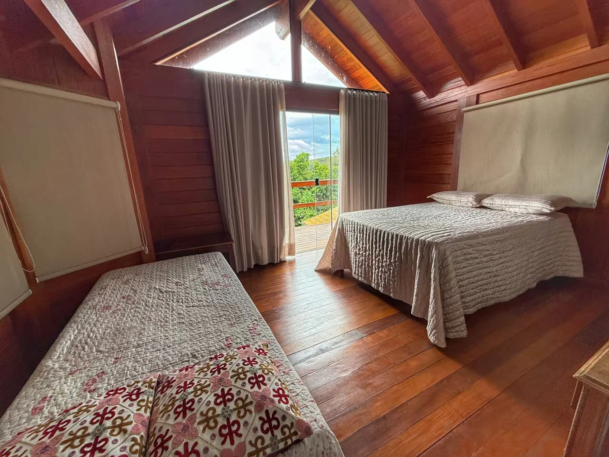

01 / DESCANSARO DESCANSO TEM SEU LUGARAcordar.
Acordar.
E agradecer.
O quarto superior recebe uma cama de casal, uma bicama e um berço. No térreo, um segundo quarto com sofá-cama de casal amplia as possibilidades de estar junto.